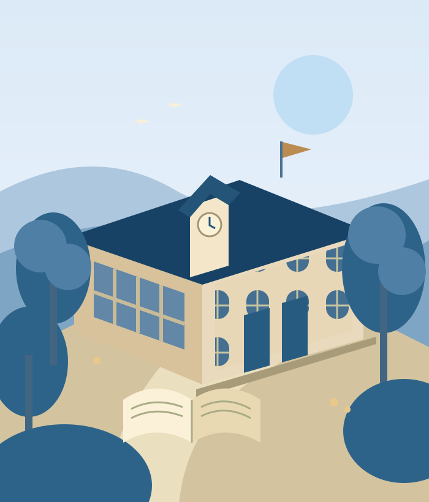

BIG IDEAS. BRIGHT FUTURES.
Your future.
Your world.
Start here.
A place to ask bigger questions, discover new passions, and grow into who you’re meant to be.
Rooted in curiosity.
Growing beyond boundaries.

WELCOME TO BM
Great learning begins
with being yourself.
Our vision for BM International School is simple: a community where young people feel known, inspired, and ready to explore the world.
This is the beginning of our story. We’re shaping a school experience around thoughtful learning, meaningful connections, and the joy of discovery.
Explore our approach ↗A JOURNEY, NOT JUST A TIMETABLE
Every stage.
New possibilities.
From first discoveries to independent thinking, explore our proposed learning journey.Learning stages and admissions ages are subject to confirmation.
Early years
Big discoveries start with little questions. Space to play, wonder, and find a voice.
A foundation of curiosity →Enquire about early years ↗Primary school
Connecting ideas, building friendships, and discovering the confidence to try.
A world to explore →Enquire about primary school ↗Secondary school
Thinking independently, finding purpose, and imagining what comes next.
The next chapter awaits →Enquire about secondary school ↗explore.
belong.
ROOM FOR EVERY SIDE OF YOU
Learning doesn’t
stop at the bell.
Our vision goes beyond lessons. We’re imagining a school day filled with creativity, movement, collaboration, and moments that bring people together.
01 Create & express +
Art, ideas, and imagination. Our vision gives students room to experiment, share their perspective, and discover the satisfaction of making something their own.
02 Move & discover +
Energy, teamwork, and exploration. We envision opportunities to move, try new challenges, and build confidence alongside others.
03 Connect & contribute +
A community to grow with. Our ambition is a place where listening, working together, and caring for others are part of everyday learning.
GOOD QUESTIONS. A GREAT START.
A little more
to explore.
How can I ask about admissions?+
Choose a learning stage, then use the enquiry form below. In this local concept, your enquiry downloads as a text file for you to keep. School contact details will be added once confirmed.
Prepare an enquiry ↗Which curriculum will BM follow?+
The school’s curriculum, learning stages, and entry ages are still to be confirmed for this website. We’ll add verified information before launch.
Can I arrange a school visit?+
Visit arrangements and the campus address have not yet been provided. Include your interest in a visit when preparing your enquiry.
YOUR NEXT CHAPTER
Let’s start
with hello.
Interested in BM International School?
Prepare an enquiry and take the first step.